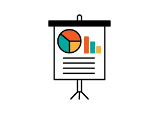

GuideTWSI: A Diverse Tactile Walking Surface Indicator Dataset from Synthetic and Real-World Images for Blind and Low-Vision Navigation
H. Hwang, S. Yang, A. Nguyen, P. Goel, K. Adhikari, S. Ivan Lee, J. Biswas, N. A Giudice, D. Kim
ICRA 2026 - Best Paper Finalist (Top 4 out of 1000+ accepted papers)
AVA in Action: Developing a Guide Dog Robot for Blind and Low-Vision People
H. Hwang, K. Adhikari, P. Goel, A. Nguyen, S. Shodhaka, S. Yu, T. M Dang, K. Suzuki, G. Chebly, P. White, J. Biswas, N. A Giudice, S. Ivan Lee, D. Kim
CVPR 2025 - AVA Workshop
Visibility Detection and Semi-Supervised k-NNN: A Generalized Lightweight Approach for Medical Anomaly Detection
P. Goel , K. A. Gomez, w/ Prof. G. Van Horn
High Distinction Research Poster - MassAI Showcase 2024
Poster
Impact of Video Game Programming & A.I. on Sports Development and Performance
May 2019
P. Goel w/ Prof. T. Russworm, Commonwealth Honors College
Independent Capstone Honors Thesis
Measuring Semantic Text Similarity to Identify Duplicate Questions via Long-Short Term Memory Neural Networks
P. Goel, S. Bhatia, J. Olson, J. Herlitz w/ Prof. Mohit Iyyer
Outstanding Undergraduate Oral Presentation, UMass NLP Expo 2018
Learning Agile and Dynamic Motor Skills for Legged Robots
Dec 2025
Modern Brain Machine Interfaces
Oct 2025
Neural Sensorimotor Gaze Control of Foot Placement When Walking in Natural Terrain
Sep 2025
From Infants to AI: Incorporating Infant-like Learning in Models Boosts Efficiency and Generalization in Learning Social Prediction Tasks
Apr 2025
Neural Rendering for 3D Scene Reconstruction in Sports
May 2024
Executive and Motor Function Development in Sports via Video Games
Feb 2019
Autonomous Agents - A.I. applications
Mar 2018